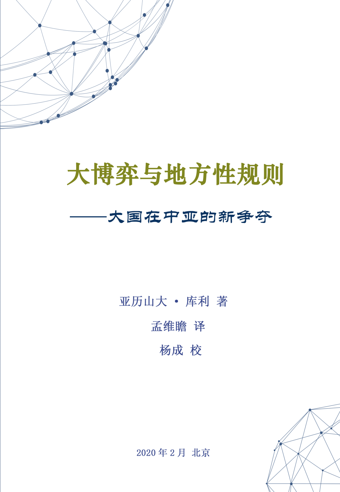
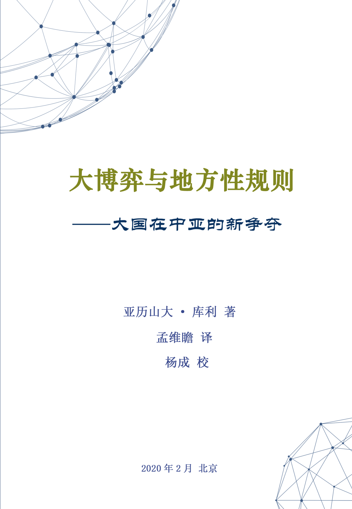

收录于合集
 

作者简介
亚历山大·库利（Alexander Cooley），哥伦比亚大学哈里曼研究所所长。他主要研究俄罗斯、中亚和高加索国家的政治与对外关系。他先后出版过七部著作，如《无国界的独裁者：中亚的权力与金钱》（2017年出版）、《退出霸权：美国全球秩序的瓦解》（2020年出版）。他曾在《纽约时报》、《外交政策》、《外交事务》上发表评论。
译者简介
孟维瞻，复旦大学发展研究院助理研究员，2018年在香港大学政治学系获得博士学位。他主要研究国际关系理论、东亚安全、中国政治与外交。在复旦大学工作后，他先后在英文核心学术期刊上发表八篇论文。
目录
致 谢
引 言
第一章 大国在中亚的新争夺
第二章 地方性规则：中亚国家的政权如何生存
第三章 中亚：美国在阿富汗军事行动的必经之地
第四章 俄罗斯寻求在中亚地区的特权地位
第五章 上海合作组织以及中国的西进运动
第六章 反恐、民主化和人权
第七章 地缘政治竞争和政治稳定：吉尔吉斯斯坦军事基地竞价战
第八章 外部力量进入中亚要付出的代价：合同与腐败
第九章 驱除区域合作的阴影
第十章 多极化时代的各国在中亚的新竞争
致谢
我在写这本书的过程中，有很多专家和组织曾经给我提供过帮助，我深表感谢。我尤其感谢“开放社会基金会”（the Open Society Foundations，OSF）给了我这个宝贵的机会，让我做了很多实地研究，从世界各地寻找各种重要资料。在我思考问题的过程中，伦尼·伯纳多（Lenny Benardo）、比帕莎·雷（Bipasha Ray）和史蒂夫·哈贝尔（Steve Hubbell）给了我很多帮助。我也感谢开放社会基金会的“中央欧亚研究项目”（Central Eurasia Project）给了我研究机会，尤其是安东尼·里克特（Anthony Richter），他鼓励我思考我的研究对于外交政策（例如军事基地问题以及西方对中亚地区的安全介入问题）有什么指导意义。开放社会基金会在吉尔吉斯斯坦、土库曼斯坦和布鲁塞尔的分支机构，对我的田野调查提供了很多资金支持，其中尤其感谢库马尔·别克波罗托夫（Kumar Bekbolotov）和祖哈拉·哈利莫瓦（Zuhra Halimova）的热心帮助。我在巴纳德学院访问的时候，也获得过不少支持。哥伦比亚大学的哈里曼研究所（Harriman Institute）为我在土库曼斯坦教育部的考察工作提供了资助，还为我2011年在华沙考察欧安组织民主制度与人权办公室提供了资助。2010年—2011年，我与杰克·斯奈德合作，共同主持了“后共产主义世界人权问题”的研究项目。最后，我还要感谢哥伦比亚大学国际关系与公共事务学院的部分工作人员，2011年春天我曾经负责指导他们的一个项目，他们对中国与土耳其的能源关系做了出色的研究。
这本书的部分章节和重要论点，我曾经在参加学术会议时进行过阐述。其中包括麻省理工学院、纽约大学、多伦多大学、耶鲁大学（Yale University）、美国艺术与科学学院（American Academy of Arts and Sciences）、各国民族研究协会（the Association for the Study of Nationalities）、华盛顿战略与国际研究中心（the Center for Strategic and International Studies）、凯南研究所（Kennan Institute）、美国外交政策全国委员会（a National Committee on American Foreign Policy）。我曾经参加过哥伦比亚大学与哈佛大学联合举办的学术会议“中亚到底有多重要？”。上海社会科学院曾经对我的研究做过有价值的反馈，我也参加过第9届、第10届上海合作组织国际学术研讨会（感谢潘光、李立凡）。此外，我还参加过哥伦比亚大学北京全球中心、布鲁塞尔美国德国马歇尔基金会跨大西洋中心（the U.S. German Marshall Fund’s Transatlantic Center）、伦敦大学亚非学院、莫斯科卡内基研究中心（Carnegie Moscow）、美利坚大学举办的学术会议，以及PONARS欧亚问题学术会议（先后在伊斯坦布尔、莫斯科、第比利斯和比什凯克举办）。
我也非常感谢Ali Borochoff –Porte、Sasha Smyslova、Nadia Bulkin、Sharone Tobias对我的帮助。马修•沙夫（Matthew Schaaf）对我的研究做出了巨大的贡献，目前他是非政府组织“自由之家”（Freedom House）的成员之一，他精力充沛、富有奉献精神，给了我独特的启发。他帮我解决了很多棘手的问题，还帮我绘制了各种地图、表格，帮我修改了初稿。牛津大学出版社的戴夫•麦克布莱德（Dave McBride）提供了很多宝贵的意见，我刚开始做这个项目的时候，他就给了我不少善意的鼓励，四位评审专家也给了我不少重要的帮助和反馈。在我的考察途中，以及撰写本书的过程中，我的同事、家人均给了我重要支持，书中所有文责均由我一个人承担。
亚历山大•库利
2011年10月于纽约
引言
本来，我并没有计划将这个研究写成一本书。尽管我长期关注中亚问题，但我之前的研究成果，并不仅仅局限于中亚。我以前主要对各个后苏联国家进行比较研究，分析苏联时代的遗产在各国的不同发展状况。此外我还关注美国在各个国家建立的军事基地，并且与Hendrik Spruyt合作研究各后苏联国家是如何分割、共享和转移自己的主权的。因此说，中亚只是我的研究中的一个“案例”，而不是全部内容。
本来，我只想研究一个非常小的话题——上海合作组织（the Shanghai Cooperation Organization）。这个组织的成员国包括中国、俄罗斯和中亚国家。到2010年左右，这个组织似乎已经能够与西方国家在中亚建立的安全与经济组织相抗衡。但是，2008年全球金融危机与俄罗斯—格鲁吉亚战争，使得中俄两国对上海合作组织的发展议程产生了分歧，因此该组织的发展一度受到影响。
与此同时，就在我的另一本书《基地政治》（Base Politics）出版几个月后，中亚小国吉尔吉斯斯坦在俄罗斯的支持下，宣布将美国的军事力量从毗邻首都比什凯克的玛纳斯（Manas）空军基地驱逐出去。但是，美国官员做出了很大努力，同意向吉尔吉斯斯坦支付更多的租金，试图继续在玛纳斯基地驻军。最后美国成为胜利者，吉尔吉斯斯坦政府改变了之前的决定。显然，吉尔吉斯斯坦总统库尔曼别克·巴基耶夫（Kurmanbek Bakiyev）是在发起竞价战，同时敲诈美俄两国，试图获得最大利益。然而仅仅一年之后，吉尔吉斯斯坦发生骚乱与政变，巴基耶夫政府垮台了。国内民众掀起了一场反美浪潮，新政府要求对巴基耶夫与美国签订的那些与军事基地有关的服务合同、燃料合同进行调查。美国国会对这件事进行调查的时候，我曾经作证，因此我对本书的内容开始有了最初的兴趣。同时我也感到，这场政治剧变的发展速度，是如此之快。
在进行一定的反思之后，我认为，在我的研究中，不应该仅仅将中亚国家看作某种特定的政治现象的“案例”。我们更应该关注中亚国家与外部大国（美国、俄罗斯、中国）之间的互动，这对于我们研究世界其他地区具有重要的启发意义。中亚地区就像是一个实验室，我们可以通过这个窗口，来观察多极世界的发展动态，包括美国权威的衰落，以及威权国家对西方推动民主和人权努力的抵制，同时我们还可以看到中国正在逐渐成为中亚地区的领导者。各个大国都试图在中亚获得不同的利益，它们不断地介入中亚，但各个大国之间又是彼此制约的，这就使得中亚各国的政府获得了很大的权力。同时，这种互动使得中亚地区原来的国际规范、规则和制度不再起到作用，被新的国际规范、规则和制度所取代。因此，我希望这本书所探讨的相关问题，不仅能够吸引欧亚国家（即后苏联国家）的学生，也能够吸引所有对“后西方”世界的秩序和治理问题感兴趣的学生。


好好学习，天天“在看”